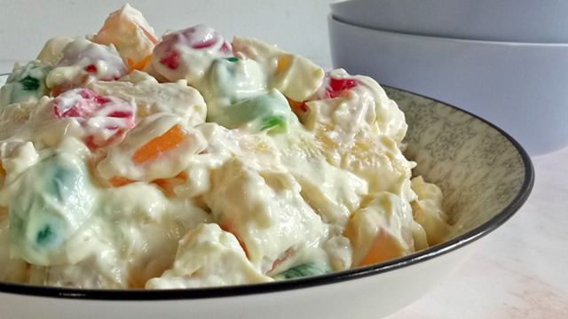

Buko Salad Recipe

Description
It's a tradition to have a fruit salad for dessert on the table for Noche Buena (the Christmas Eve celebration for the Christian Latinx population). But it doesn't stop there: from birthdays to weddings, it's a staple in every Filipino celebration.
Some might associate fruit salad with this dessert recipe. Both recipes have an array of fruit ingredients and the procedure is identical. The main difference of Buko Salad is that the young coconut is made the star of the dish.
This recipe serves 6.
Ingredients
- 4 cups young coconut (buko), shredded
- 6 ounces sugar palm fruit (kaong), drained
- 12 ounces coconut gel (nata de coco), drained
- 2 cans (15 ounces each) fruit cocktail, drained
- 8 ounces pineapple chunks, drained
- 1 can (14 ounces) sweetened condensed milk
- 7 ounces table cream
Steps
- In a mixing bowl, combine buko, kaong, nata de coco, pineapple chunks, and fruit cocktail. Gently stir to distribute the ingredients.
- Add sweetened condensed milk and table cream. Mix until all the ingredients are properly distributed.
- Refrigerate for at least 4 hours or place in the freezer for 1 hour.
- Transfer to a serving bowl.